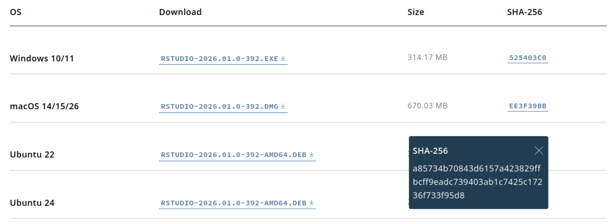

Yet another tutorial on how to use a file hash
What is a file hash and why do we need one? Let’s assume you are downloading a file containing software from a website you trust, for instance you want to install the latest RStudio IDE to develop R code in your computer. In this case, the website provides a hash value to verify the authenticity of the file you are about to download.

You want to verify that the file you downloaded arrived unaltered to your computer after going through he public Internet. The file hash generated with the SHA-256 algorithm provides a means to doing precisely this. If a single bit of the installer was changed while on route to your machine the resulting hash will be different.
What is a file hash?
This is an alternative to doing a full encryption of the file in order to verify that its contents have not been modified. A hashing algorithm turns the bytes of the file into a unique text string. This conversion is irreversible and this makes it different from file encryption.
The main application of a file hash is for file integrity verification if your distribute it along with the file itself. This assumes that the website information is genuine.
This helps securing a file while it is in transit from a website to a destination client, but only if the receiver compares the received file hash against the original value. In this regard file hashes are an indirect means of protection from file tampering.
Other use cases for file hashing are file duplicate detection, file tracking, and in file content change detection as in version control systems.
How to generate the SHA-256 file hash in Ubuntu 24?
The SHA-256 algorithm is part of the SHA-2 family, designed by the American National Security Agency (NSA) and published by the National Institute of Standards and Technology (NIST) as a U.S. Federal Information Processing Standard (FIPS), [2]. It maps any input to a 65-character text string representing a unique value in hexadecimal. The possibility of two different files producing the same hash are extremely low, as opposed to the SHA-1 family of algorithms, like MD5, which should be discontinued for this reason. When a hashing algorithm produces the same value for different input, it is said to have a collision.
First of all download the file and the hash value. Then generate a target check file with the published original hash value and the path to the file that was downloaded on your local machine. Finally run the command sha256sum --check on the name of the check file. sha256sum will parse the original hash and will compare it to the one generated from the downloaded file. If they are the same then you will get an OK at the prompt, otherwise there will be a message about potential file corruption.
In short, here are the commands:
- Download the file using
wget:wget https://download1.rstudio.org/electron/jammy/amd64/rstudio-2026.01.0-392-amd64.deb ~/Downloads/rstudio-2026.01.0-392-amd64.debor usingcurl:curl -L -o ~/Downloads/rstudio-2026.01.0-392-amd64.deb https://download1.rstudio.org/electron/jammy/amd64/rstudio-2026.01.0-392-amd64.deb - Generate the target check file with the published hash:
echo a85734b70843d6157a423829ffbcff9eadc739403ab1c7425c17236f733f95d8 ~/Downloads/rstudio-2026.01.0-392-amd64.deb > /tmp/sha256-target-check - Use
sha256sumto compare the original hash and the one generated from the downloaded file:sha256sum --check /tmp/sha256-target-check
If the two hashes are identical you will see:
/home/pablo/Downloads/rstudio-2026.01.0-392-amd64.deb: OKTo show the message you would get if a single byte is changed, let’s fabricate a tampered file from a copy of the downloaded one. To simulate the alteration let’s write 00 at position 1000 in the binary file using the combination of print and dd at the command line:
$ cp ~/Downloads/rstudio-2026.01.0-392-amd64.deb ~/Downloads/rstudio-2026.01.0-392-amd64-tampered.deb
$ cd ~/Downloads
$ printf '\x00' | dd of=~/Downloads/rstudio-2026.01.0-392-amd64-tampered.deb bs=1 seek=1000 count=1 conv=notrunc
1+0 records in
1+0 records out
1 byte copied, 3.4209e-05 s, 29.2 kB/sNow prepare the target check based on the simulated altered file:
`echo a85734b70843d6157a423829ffbcff9eadc739403ab1c7425c17236f733f95d8 ~/Downloads/rstudio-2026.01.0-392-amd64-tampered.deb > /tmp/sha256-tampering-test`Then the message is:
sha256sum --check /tmp/sha256-tampering-test
/home/pablo/Downloads/rstudio-2026.01.0-392-amd64-tampered.deb: FAILED
sha256sum: WARNING: 1 computed checksum did NOT matchNote what happens if a mistake is made copying the original hash into the target check file. In the example below the last digit, 8, was replaced with a 1:
echo a85734b70843d6157a423829ffbcff9eadc739403ab1c7425c17236f733f95d1 ~/Downloads/rstudio-2026.01.0-392-amd64.deb > /tmp/sha256-target-hash-error-check`Then sha256sum would also complain that a hash mismatch happened. This can lead to a false positive by signalling possible file tampering when it is really our mistake creating the hash from the received file:
sha256sum --check /tmp/sha256-target-hash-error-check
/home/pablo/Downloads/rstudio-2026.01.0-392-amd64.deb: FAILED
sha256sum: WARNING: 1 computed checksum did NOT matchIf the length of the hash is changed by mistake the error is different. Below we add a one at the end of the 65 character hash:
echo a85734b70843d6157a423829ffbcff9eadc739403ab1c7425c17236f733f95d81 ~/Downloads/rstudio-2026.01.0-392-amd64.deb > /tmp/sha256-target-hash-too-long-check`In this case the error is:
sha256sum --check /tmp/sha256-target-hash-too-long-check
sha256sum: /tmp/sha256-target-hash-too-long-check: no properly formatted SHA256 checksum lines foundSummary
There is a three-step process to use the published sha-256 file hash to verify the integrity of a file download. Download the file. Create a target check file with the published hash and the full-path name of the downloaded file. Then run the comparison with the program sha256sum --check <target-check-file>.
Some errors creating the target check file can mislead into thinking the downloaded file has been tampered with: a copy error in a single character of the original hash. Others are easily distinguishable from a real file hash mismatch, like accidentally shortening or lengthening the target hash by a single character.